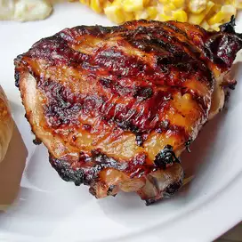

BBQ and Grilling

Description:
The best BBQ chicken, pork and BBQ sauces. Hundreds of barbecue and grilling recipes, with tips and tricks from home grillers.
Ingredients:
- 1 (16 ounce) bottle Italian-style salad dressing
- 1 teaspoon garlic powder
- 1 teaspoon salt
- 4 skinless, boneless chicken breast halves
Steps:
- In a shallow baking dish, mix the salad dressing, garlic powder, and salt. Place the chicken in the bowl, and turn to coat. Marinate in the refrigerator at least 4 hours. (For best results, marinate overnight.)
- Preheat the grill for high heat.
- Lightly oil grate. Discard marinade, and grill chicken 8 minutes on each side, or until juices run clear.